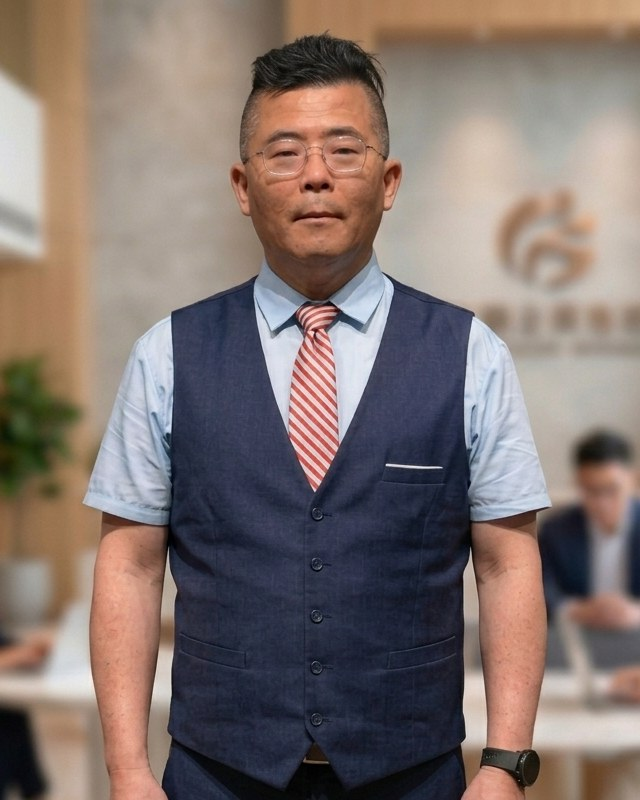

🌾
Food Ed.食育
從米果到多款水果的產銷學習，落實食農教育。
A village school in the rice country of Zhutang — where sharp eyes and wide wings guide every child toward truth, goodness, and beauty.
竹塘鄉間的一所小學——以睿眼展翅為精神，陪伴每個孩子追求真善美。

Since 2025When Principal Hsieh Bo-Yu stepped through Changan's gate in August 2025, he became the sixteenth person to lead the school since Taiwan's postwar restoration in 1945. He holds a master's degree from the Graduate Institute of Educational Administration and Policy Development at National Chiayi University, and arrived not at a city school, but at a small farming-village school in Zhutang Township, on the western plain of Changhua County.
The school's crest tells its own story: a bat that once roosted in the betel palms, wings spread wide, eyes sharp and far-seeing. Principal Hsieh's guiding belief — "Focusing entirely on the children, bringing every child to success" — echoes that same spirit: every child deserves the chance to shine.
2025 年 8 月，謝博宇校長踏入長安國小校門，成為自 1945 年台灣光復以來，這所學校的第十六任校長。他擁有國立嘉義大學教育行政與政策發展研究所碩士學位，接下的不是城市裡的大型學校，而是彰化縣竹塘鄉田野間的一所農村小學。
校徽說著自己的故事：一隻曾棲息在蒲葵樹上的蝙蝠，展翅高飛，睿眼深謀。謝校長的辦學信念——「心心念念為孩子，把每個孩子帶上來」——正呼應著同一種精神：堅信每個孩子都有發光的機會。
Changan's vision — Food Education, Aesthetics, Technology, International Outlook, and Reading — reaches from the rice paddies to the classroom, grounded in local life and open to the world.
長安的願景——食育、美感、科技、國際、閱讀——從稻田到教室，形塑一套扎根在地、放眼世界的課程。
Six commitments guide every decision at Changan — from the classroom to the community.
六項承諾，指引長安在教室內外的每一個決定。
Eight letters, eight abilities — Principal Hsieh's picture of the Changan child who is ready for the future.
八個字母、八種能力——謝校長心中，長安孩子面向未來所需具備的圖像。
Principal Hsieh Bo-Yu firmly believes every child deserves a chance to shine. He is committed to creating a friendly, innovative, life-long learning environment by prioritizing students, fostering professional development, and promoting partnership. 謝博宇校長堅信每個孩子都有發光的機會，致力於打造一個友善、創新且能啟發終身學習的教育場域，以學生為中心，透過專業發展與夥伴互助共同實現。
Four directions, twelve concrete steps — how Principal Hsieh turns the Changan vision into daily practice.
四大方向、十二項具體作法——謝校長把長安的願景化為日常實踐的方式。
Educators, parents, and friends from Taiwan and abroad are warmly welcome to visit Changan. We especially welcome colleagues interested in bilingual education, food-and-farming learning, and life in a small Zhutang farming village.
歡迎國內外教育工作者、家長與朋友蒞校交流。我們尤其歡迎對雙語教育、食農教育以及竹塘農村小學生活有興趣的同道中人。